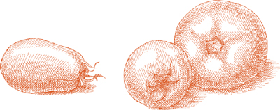

ЯК ТЫСЯЧАМ блюд, которые составляют записанный репертуар итальянской региональной кухни, если бы нужно было выбрать лишь несколько, которые наиболее ярко выражают гений этой кухни, это блюдо было бы среди них. За исключением минимального количества жира, необходимого для подрумянивания мяса, оно состоит всего из двух компонентов: корейки свинины и молока. Постепенно готовясь вместе, они трансформируются: свинина приобретает нежность текстуры и вкуса, что приводит некоторых к ошибочному мнению, что это телятина, а молоко исчезает, заменяясь clusters вкусного, орехово-коричневого соуса.
На 6 порций
1 столовая ложка масла
2 столовые ложки растительного масла
2½ фунта (1.1 кг) свиной корейки (см. примечание ниже)
Соль
Черный перец, свежемолотый
2½ чашки (или больше) цельного молока
Примечание  Указанный выше кусок мяса включает ребра, к которым прикреплена свиная корейка. Попросите мясника отделить мясо от ребер целиком и разделить ребра на две или три части. Отделив корейку от костей, вы сможете лучше подрумянить ее, а готовя вместе с костями, жаркое получит значительный вклад во вкус от костей.
Указанный выше кусок мяса включает ребра, к которым прикреплена свиная корейка. Попросите мясника отделить мясо от ребер целиком и разделить ребра на две или три части. Отделив корейку от костей, вы сможете лучше подрумянить ее, а готовя вместе с костями, жаркое получит значительный вклад во вкус от костей.
Другой кусок свинины, который хорошо подходит для этого блюда, — это бескостной рулет из мышечной ткани в основании шеи, иногда известный как бостонская лопатка. В центре лопатки есть слой жира, который проходит вдоль мышцы. Это делает этот кусок очень сочным и вкусным, но когда вы его нарезаете, ломтики, как правило, распадаются в местах соединения мяса и жира. Если вы не считаете это проблемой, вам стоит рассмотреть возможность использования лопатки из-за ее отличного вкуса и сочности. Если вы решите это сделать, замените 2 фунта (900 г) лопатки целиком на 2½ фунта (1.1 кг) свиной корейки.
Не обрезайте жир ни с одного из кусков мяса. Большая часть жира растает в процессе приготовления, поливая мясо и предотвращая его высыхание. Когда жаркое будет готово, вы сможете вынуть его из кастрюли и выбросить.
1. Выберите кастрюлю с толстым дном, которая позже сможет вместить свинину, положите в нее масло и оливковое масло, и включите средний огонь. Когда пена от масла утихнет, положите мясо, сначала стороной с жиром вниз. Когда оно подрумянится, переверните его, продолжая поворачивать мясо каждые несколько минут, чтобы оно равномерно подрумянилось со всех сторон. Если вы заметите, что масло становится очень темным, уменьшите огонь.
2. Добавьте соль, перец и 1 чашку (240 мл) молока. Добавляйте молоко медленно, чтобы оно не выкипело. Дайте молоку закипеть в течение 20–30 секунд, затем уменьшите огонь до минимума и накройте кастрюлю крышкой, оставив ее немного приоткрытой.
3. Готовьте на очень медленном огне примерно 1 час, переворачивая мясо время от времени, пока молоко не загустеет в орехово-коричневый соус за счет испарения. (Точное время зависит в значительной степени от мощности вашей плиты и толщины кастрюли.) Когда молоко достигнет этой стадии, и не раньше, добавьте еще 1 чашку (240 мл) молока, дайте покипеть около 10 минут, затем накройте кастрюлю, плотно закрыв крышку. Проверяйте и переворачивайте свинину время от времени.
4. Через 30 минут приоткройте крышку. Продолжайте готовить на минимальном огне, и когда вы увидите, что в кастрюле больше нет жидкого молока, добавьте оставшиеся ½ чашки (120 мл) молока. Продолжайте готовить, пока мясо не станет мягким при прокалывании вилкой, и все молоко не свернется в маленькие орехово-коричневые комки. В общей сложности это займет от 2от ½ до 3 часов. Если перед тем, как мясо полностью приготовится, вы заметите, что жидкость в кастрюле испарилась, добавьте еще ½ чашки (120 мл) молока, повторяя шаг, если это будет необходимо.
5. Когда свинина станет мягкой, а все молоко в кастрюле загустеет в темные комки, перенесите мясо на разделочную доску. Дайте ему отдохнуть несколько минут, затем нарежьте его ломтиками толщиной около ⅜ дюйма (1 см) или чуть меньше, и выложите на теплое сервировочное блюдо.
6. Наклоните кастрюлю и ложкой снимите большую часть жира — его может быть до 1 чашки (240 мл) — стараясь оставить все свернувшиеся молочные комки. Добавьте 2–3 столовые ложки (30–45 мл) воды и выпарите воду на сильном огне, используя деревянную ложку, чтобы соскоблить остатки пищи со дна и стенок кастрюли. Полейте все соки из кастрюли по свинине и подавайте немедленно.

На 6 порций
2 столовые ложки (30 г) масла
1 столовая ложка (15 мл) растительного масла
2 фунта (900 г) свинины (филе без костей) ИЛИ лопатка Бостон, целиком
Соль
1 чайная ложка черного перца горошком 3 лавровых листа
½ чашки (120 мл) хорошего красного винного уксуса
1. Выберите кастрюлю с толстым дном или эмалированную чугунную кастрюлю, в которую свинина поместится плотно. Положите в нее масло и масло, включите средний огонь, и когда пена от масла утихнет, положите мясо, стороной с жиром, если он есть, вниз. Обжарьте мясо до глубокой корочки со всех сторон, переворачивая его по мере необходимости. Если вы видите, что масло становится темно-коричневым, немного уменьшите огонь.
2. Добавьте соль, переворачивая мясо, чтобы посыпать все стороны. Легко раздавите перец молотком или мясным молотком или даже молотком, затем положите его в кастрюлю вместе с лавровыми листьями и уксусом. Деревянной ложкой быстро соскребите коричневые остатки со дна и стенок кастрюли, но не позволяйте уксусу кипеть достаточно долго, чтобы он испарился. Уменьшите огонь до минимума, плотно накройте кастрюлю крышкой и готовьте, периодически переворачивая свинину, пока мясо не станет мягким при нажатии вилкой. Если в течение этого времени жидкости в кастрюле станет недостаточно, добавьте 2–3 столовые ложки воды.
3. Переложите свинину на разделочную доску. Дайте ей немного отдохнуть, затем нарежьте на куски толщиной около ⅜ дюйма (1.0 см) (или чуть меньше) и выложите их на теплое сервировочное блюдо.
4. Наклоните кастрюлю и ложкой уберите большую часть, но не все, жира, а также все лавровые листья. Добавьте 2 столовые ложки воды, включите сильный огонь и, пока вода выпаривается, соскребите деревянной ложкой любые остатки приготовления со дна и стенок. Полейте соками из кастрюли свинину и подавайте сразу.
Эта пьяная запеченная свинина готовится долго в достаточном количестве красного вина, чтобы покрыть ее, достигая необыкновенной нежности и приобретая красивый, блестящий, глубокий цвет махагони. Не мучаясь с выбором вина, вы должны выбрать такое, которое сможет выполнить свою важную роль в этом рецепте. Барбера или Дольчетто из Пьемонта идеально подойдут. Также подойдут одни из тосканских вин, сделанных исключительно из винограда сангиовезе; или, из других стран, австралийский или южноафриканский Шираз, или хорошо сделанный калифорнийский Зинфандель, или Кот-дю-Рон из Франции. Имейте под рукой одну-две дополнительные бутылки, чтобы подать их с свининой.
На 6–8 порций
3 средние моркови
3½–4 фунта свиной корейки ИЛИ Бостонской лопатки, туго перевязанной ниткой
1 столовая ложка растительного масла
2 столовые ложки масла
Мука, рассыпанная на тарелке
2 столовые ложки граппы, марки, кальвадоса или виноградной водки (см. замечание)
1½ чашки или больше сухого красного вина (см. рекомендации выше в предисловии)
Целый мускатный орех
2 лавровых листа
Соль
Черный перец, свежемолотый
1. Очистите и вымойте морковь, затем нарежьте её вдоль на палочки толщиной ⅜ дюйма (0.95 см) или чуть меньше.
2. Возьмите длинный, острый, довольно толстый инструмент, такой как мясной зонд, сталь для точения ножей, крепкую китайскую палочку или даже шило, и проколите мясо с обоих концов в столько мест, сколько у вас палочек моркови, оставляя отверстия на расстоянии около 1½ дюйма (3.8 см) друг от друга. Вставьте палочки моркови в отверстия.
3. Выберите кастрюлю с толстым дном или эмалированную чугунную кастрюлю, предпочтительно овальной формы, достаточно большую, чтобы позже плотно вместить мясо. Влейте масло и добавьте масло, включите средний огонь. Когда пена от масла начнет утихать, обваляйте мясо в муке, покрывая его со всех сторон, и положите в кастрюлю. Обжарьте его со всех сторон до глубокой корочки, переворачивая его.
4. Когда мясо подрумянится, добавьте граппу или другой бренди. Дайте покипеть несколько секунд, затем влейте вино, пока оно не почти полностью покроет мясо. Если 1½ чашки недостаточно — это будет зависеть от размера используемой кастрюли — добавьте еще.
5. Добавьте немного тертого мускатного ореха — около ⅛ чайной ложки, лавровые листья, несколько щепоток соли и щедрое количество перца. Переверните свинину один-два раза. Когда вино начнет активно кипеть, отрегулируйте огонь, чтобы готовить на очень слабом кипении, и плотно накройте кастрюлю. Рекомендуется положить двойной лист тяжелой алюминиевой фольги между кастрюлей и крышкой.
6. Готовьте на медленном огне в течение 3 часов или более, периодически переворачивая мясо, пока оно не станет мягким при прокалывании вилкой. После 2½ часов готовки проверьте кастрюлю, чтобы увидеть, сколько жидкости осталось. Если жидкости много, снимите фольгу, приоткройте крышку и немного увеличьте огонь.
7. Когда готово, свинина должна быть довольно темной, и в кастрюле должно остаться небольшое количество сиропообразного соуса. Переложите мясо на разделочную доску, нарежьте тонкими ломтиками и выложите их на теплое сервировочное блюдо. Полейте все соки из кастрюли сверху, вместе с любыми палочками моркови, которые могли выпасть, и подавайте сразу.
Замечание заранее Ростбиф можно закончить за несколько часов до подачи, рано в день, когда вы планируете его подавать. Разогрейте его аккуратно в закрытой кастрюле, достаточно долго, чтобы мясо прогрелось полностью, добавив 2 или 3 столовые ложки воды, если это станет необходимо.
На 4–6 порций
¼ чашки растительного масла
2 фунта (900 г) свиных отбивных, предпочтительно из центральной части корейки, нарезанных толщиной ¾ дюйма (2 см)
½ чашки сухого белого вина
½ чашки консервированных импортных итальянских слив, слитых и нарезанных
½ чашки жирных сливок для взбивания
Соль
Черный перец, свежемолотый
Небольшой пакет ИЛИ 1 унция (30 г) сушеных порчини, восстановленных и нарезанных
Фильтрованная вода от замачивания грибов, см. этой странице
½ фунта (225 г) свежих белых шампиньонов
1. Выберите сковороду для обжаривания, которая сможет вместить все отбивные без наложения. Влейте 2 столовые ложки растительного масла, включите средний огонь, и когда масло разогреется, положите отбивные. Обжарьте мясо до глубокого золотистого цвета с одной стороны, затем переверните.
2. Добавьте белое вино, дайте ему покипеть briskly в течение 15–20 секунд, используя деревянную ложку, чтобы соскоблить пригоревшие остатки на дне сковороды. Добавьте помидоры, сливки, соль, щедрую порцию перца и нарезанные восстановленные порчини. Уменьшите огонь, чтобы готовить на очень слабом кипении, и накройте сковороду, оставив крышку слегка приоткрытой.
3. Готовьте в течение 45 минут или более, в зависимости от точной толщины и качества котлет, пока мясо не станет мягким при нажатии вилкой. Переворачивайте котлеты время от времени.
4. Пока котлеты готовятся, налейте отфильтрованную воду от замачивания грибов порчини в небольшую кастрюлю и уварите до объема около ⅓ чашки.
5. Быстро промойте свежие белые грибы под холодной проточной водой и тщательно высушите их мягким полотенцем. Нарежьте их очень тонкими вдоль ломтиками, не отделяя шляпки от ножек.
6. Выберите сковороду для пассерования, которая сможет вместить свежие грибы, не перегружая их. Влейте оставшиеся 2 столовые ложки масла и включите сильный огонь. Когда масло разогреется, добавьте грибы. Часто помешивайте, добавляя соль и перец. Когда выделившаяся жидкость выпарится, добавьте уваренную отфильтрованную воду от замачивания порчини и продолжайте часто помешивать, пока в сковороде не останется жидкости. Снимите с огня.
7. Когда свиные котлеты станут мягкими, добавьте к ним приготовленные грибы. Переверните котлеты и грибы, накройте сковороду снова и продолжайте готовить в течение 5–8 минут на умеренном огне. Переложите все содержимое сковороды на теплое блюдо и подавайте немедленно.
В И ТАЛИИ обращаются к кухне Эмилии-Романьи за самыми вкусными свиными деликатесами в стране, а в самой Эмилии-Романьи смотрят на Модену. Вкусный способ приготовления свежих свиных котлет в следующем рецепте является примером моденского подхода.
На 4 порции
2 столовые ложки масла
1 столовая ложка растительного масла
4 свиные котлеты из корейки, предпочтительно из нижней части, толщиной ¾ дюйма (2 см)
Мука, рассыпать на тарелке
6–8 свежих листьев шалфея ИЛИ 3–4 сушеных
Соль
Черный перец, свежемолотый
¾ чашки консервированных импортных итальянских сливовых помидоров, нарезанных, с соком, ИЛИ свежие, спелые помидоры, очищенные и нарезанные
1. Выберите сковороду для пассерования, которая сможет вместить все котлеты без перекрытия. Положите масло и оливковое масло, и включите средний огонь. Когда пена от масла начнет спадать, обваляйте котлеты с обеих сторон в муке, стряхните излишки муки, и положите их в сковороду вместе с листьями шалфея. Готовьте котлеты до насыщенного коричневого цвета с обеих сторон, примерно по 1½–2 минуты с каждой стороны.
2. Добавьте соль, несколько щепоток перца и нарезанные томаты с их соком. Отрегулируйте огонь, чтобы готовить на медленном огне, и накройте сковороду, приоткрыв крышку. Готовьте около 1 часа, пока мясо не станет мягким при нажатии вилкой. Переворачивайте котлеты время от времени во время готовки.
3. К тому времени, когда свинина будет готова, соус в сковороде должен стать довольно густым. Если он слишком жидкий, переложите котлеты на теплое сервировочное блюдо и уварите соки из сковороды на сильном огне в течение нескольких минут. Наклоните сковороду и ложкой снимите большую часть жира. Вылейте содержимое сковороды на котлеты и подавайте немедленно.
ДВА ВИНА, необходимые здесь, это Марсала и молодое красное, смесь, которая сочетает в себе ароматическую интенсивность первого с живой остротой второго. Для красного вина предпочтение следует отдать пьемонтской Барбере или Вальполичелле или любому молодому красному из Центральной Италии, такому как non-riserva Кианти. Уместно подавать то же вино с котлетами.
На 4 порции
3 столовые ложки оливкового масла первого холодного отжима
4 свиные котлеты из корейки, предпочтительно из нижней части, толщиной ¾ дюйма (2 см)
Мука, выложенная на тарелку
1 чайная ложка мелко нарезанного чеснока
1 столовая ложка томатной пасты, растворенной в смеси ½ чашки сухой Марсалы и ½ чашки сухого молодого красного вина (см. замечания выше)
Соль
Черный перец, свежемолотый
¼ чайной ложки семян фенхеля
1 столовая ложка нарезанной петрушки
1. Выберите сковороду для пассерования, которая сможет вместить все отбивные без наложения. Влейте масло и включите средний огонь. Когда масло нагреется, обваляйте отбивные с обеих сторон в муке, стряхните излишки муки и положите их на сковороду. Обжаривайте отбивные до насыщенного коричневого цвета с обеих сторон, примерно по 1½–2 минуты с каждой стороны.
2. Добавьте нарезанный чеснок, перемешивая его с маслом на дне сковороды. Когда чеснок приобретет светло-золотистый цвет, добавьте смесь двух вин и томатную пасту. Щедро посолите и поперчите, добавьте семена фенхеля. Когда вино покипит около 20 секунд, уменьшите огонь, чтобы готовить на медленном огне, и накройте сковороду, оставив крышку немного приоткрытой.
3. Готовьте около 1 часа, пока мясо не станет мягким при нажатии вилкой. Переворачивайте отбивные время от времени во время приготовления. Когда они будут готовы, добавьте петрушку, переверните отбивные 2 или 3 раза, затем перенесите их на теплое блюдо для подачи, используя шумовку или лопатку.
4. Наклоните сковороду и слейте весь жир, кроме небольшого количества. Добавьте ½ чашки воды, увеличьте огонь до максимума, и пока вода выпаривается, соскребите остатки пищи со дна и стенок сковороды с помощью деревянной ложки. Когда соки из сковороды станут густыми, вылейте их на отбивные и подавайте немедленно.

Хор АРОМАТОВ из леса и травяного сада — грибы порчини, ягоды можжевельника, майоран, лавр — которые сопровождают это рагу, перекликаются со вкусами, ассоциирующимися с пушным дичью. И как дичь, это блюдо должно подаваться на стол в компании горячей, мягкой поленты. Наиболее подходящий кусок свинины для этого рецепта — это лопатка, иногда известная как лопатка в бостонском стиле.
На 4 порции
20 ягод можжевельника
1½ фунта (675 г) свиной лопатки без костей, нарезанной на куски толщиной около 1 дюйма (2.5 см) и шириной 2 дюйма (5 см)
⅓ чашки оливкового масла первого холодного отжима
2 столовые ложки нарезанного лука
½ чашки сухого белого вина
2 столовые ложки хорошего красного винного уксуса
Небольшой пакет ИЛИ 1 унция (30 г) сушеных грибов порчини, восстановленных и нарезанных
Фильтрованная вода от замачивания грибов, см. инструкций
3 филе анчоусов (предпочтительно те, приготовленные дома), измельченные в пасту
½ чайной ложки свежего майорана ИЛИ ¼ чайной ложки сушеного
2 лавровых листа, нарезанных, если свежие, или мелко крошеных, если сушеные
Соль
Черный перец, свежемолотый
1. Заверните ягоды можжевельника в полотенце и слегка раздавите их с помощью молотка, отбивного молотка или даже молотка. Разверните их и отложите в сторону.
2. Выберите сковороду для пассерования, которая сможет вместить куски свинины, уложенные не глубже двух слоев. Влейте масло и включите средний огонь. Когда масло разогреется, положите столько кусочков мяса, сколько поместится без скученности, и готовьте, переворачивая, пока они не подрумянятся со всех сторон. Переложите их на тарелку с помощью шумовки или лопатки и повторите процедуру, пока не подрумяните все куски свинины.
3. Добавьте лук и готовьте, помешивая, пока он не станет глубокого золотистого цвета, затем верните мясо в сковороду. Добавьте вино и уксус и дайте им быстро покипеть около 30 секунд, затем положите нарезанные грибы, их фильтрованную жидкость, нарезанные анчоусы, майоран, лавровые листья и раздавленные ягоды можжевельника. Уменьшите огонь, чтобы готовить на очень медленном огне, и переверните все ингредиенты в сковороде. Добавьте несколько щепоток соли и несколько молотых перцев, снова переверните ингредиенты и плотно накройте сковороду.
4. Готовьте в течение 1½–2 часов, пока мясо не станет мягким при прокалывании вилкой. Когда оно будет готово, перенесите его с помощью шумовки на теплую сервировочную тарелку. Если соки в сковороде жидкие и водянистые, увеличьте огонь до максимума и уварите их. Если свинина выделила много жира в сковороду, наклоните ее и ложкой уберите большую часть, не выбрасывая при этом хороших соков. Вылейте оставшееся содержимое сковороды на свинину и подавайте немедленно.
Заметка заранее Блюдо можно завершить за 2–3 дня до подачи, но не уварите соки и не выбрасывайте жир до тех пор, пока не разогреете рагу осторожно, но тщательно.
В те времена когда-то бедные регионы северной Италии, восточный Венеция и Фриули, удовлетворение и питание приходилось искать в самых дешевых кусках мяса. Никто в Венеции больше не голодает, но вкус ребрышек Тревизо, медленно обжаренных с шалфеем и белым вином, так же глубоко удовлетворяет сейчас, как и тогда. Подавайте их с соками из сковороды, с итальянским пюре, или горячей, мягкой полентой.
На 4 порции
3-фунтовая (1.4 кг) порция свиных ребрышек, разделенная на отдельные ребра
¼ чашки растительного масла
3 зубчика чеснока, очищенных и нарезанных очень тонкими ломтиками
2 столовые ложки свежих листьев шалфея ИЛИ 2 чайные ложки целых сушеных, нарезанных
1 чашка сухого белого вина
Соль
Черный перец, свежемолотый
1. Выберите сковороду для обжаривания, которая сможет вместить все ребра, не overcrowding. Влейте масло и включите средний огонь. Когда масло нагреется, положите ребра и переворачивайте их во время готовки, чтобы они равномерно подрумянились со всех сторон.
2. Добавьте чеснок и шалфей. Готовьте чеснок, помешивая, пока он не станет очень светло-блондинистым, затем добавьте вино. После того как вино покипит активно в течение 15–20 секунд, уменьшите огонь до очень медленного кипения, добавьте соль и перец, накройте сковороду, оставив крышку немного приоткрытой. Готовьте около 40 минут, периодически переворачивая ребрышки, пока их мясистая часть не станет очень нежной при нажатии вилкой и легко не отделится от кости. Время от времени, когда жидкости в сковороде станет недостаточно, вам нужно будет добавить 2–3 столовые ложки воды, чтобы ребрышки не пересохли.
3. Переложите ребрышки на теплую сервировочную тарелку, используя шумовку или лопатку. Наклоните сковороду и слейте около одной трети расплавленного свиного жира. Оставьте больше жира, чем обычно, при обезжиривании сковороды, потому что он нужен для приправы рекомендуемого гарнира из картофельного пюре или поленты. Добавьте ½ чашки воды, увеличьте огонь до максимума, и пока вода выпаривается, используйте деревянную ложку, чтобы соскоблить остатки пищи со дна и стенок сковороды. Полейте получившимися темными, густыми соками ребрышки и подавайте немедленно.
Эти РЕБРЫШКИ будут, безусловно, очень вкусными даже без поленты, скажем, с картофельным пюре, но соки, которые они производят, именно такие, что требуют пышной ложки мягкой, горячей поленты, чтобы в нее погрузиться.
На 6 порций, если щедро подать с полентой
3 столовые ложки оливкового масла первого холодного отжима
⅔ чашки нарезанного лука
3-фунтовая (1.4 кг) порция ребрышек, нарезанная мясником на кусочки размером с палец
⅔ чашки нарезанной моркови
⅔ чашки нарезанного сельдерея
1½ чашки консервированных импортных итальянских сливовых помидоров, нарезанных, с их соком, ИЛИ свежие, спелые помидоры, очищенные и нарезанные
Соль
Черный перец, свежемолотый
1. Выберите сковороду для пассерования, которая сможет вместить все ребра не более чем в 2 слоя. Влейте оливковое масло и добавьте нарезанный лук, включите средний огонь и готовьте лук, периодически помешивая, пока он не приобретет светло-золотистый цвет. Добавьте ребра, переворачивая их несколько раз, чтобы хорошо покрыть, и готовьте достаточно долго, чтобы они подрумянились со всех сторон.
2. Добавьте морковь и сельдерей, переворачивая их 2–3 раза, и готовьте, пока они почти не станут мягкими.
3. Добавьте помидоры, соль и щедрую порцию перца, накройте сковороду крышкой, слегка приоткрыв ее, и готовьте на медленном, но стабильном кипении, пока мясо не станет очень нежным и легко не отделится от кости, примерно 1–1½ часа. Проверяйте сковороду время от времени. Если жидкости для приготовления станет недостаточно и ребра начнут прилипать ко дну, добавьте ½ чашки воды по мере необходимости. С другой стороны, если по окончании приготовления соки из сковороды слишком водянистые, откройте крышку, увеличьте огонь и уварите их, пока жир не отделится.
Заранее Вы можете приготовить ребра заранее, за 1 день. Разогрейте их осторожно, но тщательно перед подачей на стол.
Примечание Если вам нравятся колбасы, вы можете заменить половину количества ребер на 1 фунт (450 г) колбас и готовить их вместе. Это очень вкусное блюдо. Разрежьте колбасы пополам перед приготовлением и используйте самые простые свиные колбасы, которые сможете найти, без семян фенхеля, тмина, перца чили или других посторонних вкусов.
Солоноватый вкус этих грильованных ребер обусловлен маринадом из оливкового масла, чеснока и розмарина, в котором они должны настаиваться как минимум 1 час перед приготовлением.
На 4 порции
¼ чашки оливкового масла первого холодного отжима
1 столовая ложка очень мелко нарезанного чеснока
1 столовая ложка свежих листьев розмарина, очень мелко нарезанных ИЛИ 2 чайные ложки сушеного, нарезанного
Черный перец, свежемолотый
3-фунтовый (1350 г) кусок свиных ребер в одном куске
ПО ЖЕЛАНИЮ: угольный гриль
1. Поместите оливковое масло, чеснок, розмарин, щедрые щепотки соли и молотый черный перец в небольшую миску и взбейте вилкой, пока ингредиенты не объединятся.
2. Положите ребра на тарелку и вылейте маринад из миски на мясо, втирая его в мясо кончиками пальцев или кисточкой. Дайте постоять при комнатной температуре не менее 1 часа, периодически переворачивая ребра, чтобы аромат и вкус маринада впитались в мясо.
3. Разогрейте гриль за 15 минут до того, как будете готовы готовить ребра. Если используете уголь, дайте ему время образовать полный слой белой золы.
4. Поместите противень для гриля — или решетку для гриля, если она регулируется — на расстоянии около 20 см от источника тепла. Положите ребра на противень или гриль, смазывая их оставшимся маринадом с тарелки. Готовьте в течение 25 минут, переворачивая ребра 3–4 раза. Мясо должно быть сочным и нежным, но хорошо прожаренным, не розовым. Подавайте сразу, когда будет готово.
КАПУСТА ДЕЛАЕТ удивительные вещи с мясом, особенно с сосисками. Здесь капуста и свинина готовятся отдельно; капуста в оливковом масле, сосиски в собственном жиру. Они завершают приготовление вместе, обмениваясь взаимными и полезными вкусами.
На 4 порции
1 столовая ложка нарезанного чеснока, ¼ чашки оливкового масла первого холодного отжима
1½ фунта (675 г) красной капусты, нарезанной тонкими полосками, примерно 8 чашек
Соль
Молотый черный перец
1 фунт (450 г) нежной свиной сосиски, не содержащей трав или сильных специй
1. Положите чеснок и оливковое масло в большую сковороду для пассерования, включите средний огонь и готовьте чеснок, помешивая, пока он не станет светло-золотистым, затем добавьте всю капусту, переворачивая ее несколько раз, чтобы хорошо покрыть. Добавьте соль и перец и готовьте без крышки, время от времени переворачивая капусту, пока вы переходите к следующему шагу.
2. Положите колбасы в небольшую сковороду и проколите их в нескольких местах острым вилкой. Жир, который вытечет во время приготовления колбас, будет всем необходимым жиром. Включите средний огонь и готовьте колбасы, переворачивая их, пока они не подрумянятся со всех сторон. Переложите их на тарелку, используя шумовку или лопатку.
3. Когда капуста почти готова — она должна уменьшиться в объеме вдвое и стать мягкой, но еще не совсем мягкой после примерно 45 минут — щедро посыпьте солью и перцем и добавьте подрумяненные колбасы. Продолжайте готовить еще около 20 минут, пока капуста не станет очень мягкой, время от времени переворачивая все содержимое сковороды. Переложите на теплое блюдо и подавайте сразу.
На 4 порции
3 столовые ложки растительного масла
2 чашки лука, нарезанного очень-очень мелко
1 чашка консервированных импортных итальянских сливы помидоров, нарезанных, с небольшим количеством сока, ИЛИ свежие, спелые помидоры, очищенные и нарезанные
Соль
Черный перец, свежемолотый
1 сладкий болгарский перец желтого или красного цвета
1 фунт (450 г) нежной свиной колбасы, не содержащей трав и сильных специй
1. Положите масло и лук в сковороду для пассерования, накройте крышкой и включите средний огонь. Когда лук завянет и значительно уменьшится в объеме, снимите крышку, увеличьте огонь до среднего высокого и готовьте лук, переворачивая его время от времени, пока он не приобретет глубокий золотистый цвет.
2. Добавьте помидоры, соль и перец, хорошо перемешайте, и уменьшите огонь, чтобы готовить, не накрывая, на стабильном, но легком кипении в течение примерно 20 минут, или пока масло не отделится от помидоров.
3. Очистите перец от кожицы с помощью ножа с вращающимся лезвием, разрежьте его, удалите семена и мякоть, и нарежьте на тонкие длинные полоски.
4. Добавьте перец к помидорам и луку. Положите колбасу, проколов оболочку в нескольких местах вилкой. Накройте сковороду и готовьте на среднем огне в течение 20 минут, переворачивая колбасы и помидоры время от времени.
5. Наклоните сковороду и снимите большую часть жира. Не выбрасывайте жир; если останется колбаса, он вам понадобится для других блюд, см. примечание ниже. Переложите содержимое сковороды на теплое блюдо и подавайте немедленно.
Примечание о остатках Если осталась колбаса, нарежьте ее на мелкие кусочки и смешайте с жиром, который вы отложили, чтобы сформировать основу для вкуса ризотто, см. инструкции или раскрошите ее, разогрейте с небольшим количеством отложенного жира и перемешайте с пастой; или хорошо отцеживайте от жира, смешайте с тертым пармезаном и добавьте в фриттату.
Примечание о подготовке заранее Колбасы можно приготовить заранее за несколько часов или на день-два. Не удаляйте жир, пока они не будут разогреты.
На 4 порции
2 столовые ложки нарезанного лука
3 столовые ложки оливкового масла первого холодного отжима
¼ чайной ложки нарезанного чеснока
⅓ чашки нарезанной моркови
⅓ чашки нарезанного сельдерея
1 чашка консервированных импортных итальянских сливовых помидоров, крупно нарезанных с соком, ИЛИ свежие, спелые помидоры, очищенные и нарезанные
1 фунт мягкой свиной колбасы, не содержащей трав и сильных специй
1 чашка сушеных черных бобов, замоченных как минимум на 1 час в теплой воде
Соль
Черный перец, свежемолотый
1. Выберите кастрюлю с толстым дном или эмалированную чугунную кастрюлю, положите в нее лук и оливковое масло, и включите средний огонь. Готовьте и помешивайте лук, пока он не станет светло-золотистым, затем добавьте чеснок, и когда чеснок станет светло-блондинистым, добавьте морковь и сельдерей, тщательно перемешайте, чтобы все хорошо покрыть, и готовьте в течение 5 минут. Добавьте нарезанные томаты с соком, тщательно перемешайте, и отрегулируйте огонь, чтобы готовить на легком, но устойчивом кипении около 20 минут, пока масло не отделится от томатов.
2. Добавьте колбасы в кастрюлю, проколов их в нескольких местах вилкой. Готовьте на устойчивом кипении около 15 минут, время от времени переворачивая колбасы.
3. Слейте воду с гороха и добавьте его в кастрюлю, вместе с достаточным количеством свежей воды, чтобы покрыть. Доведите до устойчивого кипения и плотно закройте кастрюлю. Готовьте около 1½ часов, пока горох не станет мягким. Время приготовления может варьироваться, так как некоторые горохи готовятся быстрее других. Проверьте уровень жидкости в кастрюле; если ее недостаточно, добавьте ⅓ чашки воды по мере необходимости; если, наоборот, когда бобы готовы, жидкости в кастрюле слишком много, откройте крышку, увеличьте огонь до максимума и быстро выпарите жидкость, пока она не уменьшится до желаемой густоты.
4. Наклоните кастрюлю и снимите как можно больше жира. Добавьте соль и перец по вкусу, тщательно перемешайте, затем подавайте немедленно.
Примечание по приготовлению в духовке Если вы предпочитаете использовать духовку, после того как горох будет добавлен и содержимое доведено до кипения, как описано в Шаге 3, вы можете перенести кастрюлю на средний уровень заранее разогретой духовки при 175°C (350°F). Убедитесь, что ручки кастрюли жаропрочные. Если, когда горох будет готов, жидкости нужно уменьшить, сделайте это на плите.
Примечание заранее Блюдо можно полностью приготовить заранее за несколько дней. Если жидкости нужно уменьшить, делайте это только после того, как колбасы и горох будут тщательно разогреты.

На 4–6 порций
1 столовая ложка оливкового масла первого холодного отжима
1½ фунта (680 г) нежной свиной колбасы, не содержащей трав и сильных специй
½ чашки сухого красного вина
Небольшой пакет ИЛИ 1 унция сушеных грибов порчини, восстановленных
Фильтрованная вода от замачивания грибов, см. инструкции
1. Выберите сковороду для пассерования, которая сможет вместить все колбасы без наложения. Вылейте масло и положите колбасы, проколите их в нескольких местах вилкой, включите средний огонь и готовьте, переворачивая колбасы, пока они не подрумянятся со всех сторон.
2. Добавьте красное вино и отрегулируйте огонь, чтобы готовить на медленном кипении. Переворачивайте колбасы время от времени, позволяя вину полностью испариться. Когда вино полностью испарится, добавьте восстановленные грибы и фильтрованную жидкость от их замачивания. Готовьте, всегда на стабильном, но легком кипении, периодически переворачивая колбасы и используя деревянную ложку, чтобы соскоблить остатки пищи с дна и стенок сковороды, пока грибная жидкость не испарится.
3. Наклоните сковороду и снимите все жир, который сможете, если только к колбасам не подаются картофельное пюре или полента, в этом случае уберите только часть жира. Подавайте немедленно.
Специальность Эмилии-Романьи, и особенно города Модена, котечино — это свежая свиная колбаса диаметром около 3 дюймов (7.5 см) и длиной 8–9 дюймов (20–23 см). Название происходит от котика, свиной шкуры, основного компонента. Шкура для котечино берется из морды и щеки, к которой добавляется немного мяса с плеча и шеи, вместе с солью, перцем, мускатным орехом и гвоздикой, пропорции и выбор приправ варьируются в зависимости от стиля производителя. Когда та же смесь фаршируется в оболочку, сделанную из свиного копыта, это называется зампоне. В Венето аналогичный продукт называется мусетто. Он в основном сделан из морды, или мусо, и он даже мягче, чем котечино.
Правильно приготовленное и мастерски сделанное котечино исключительно нежное, с сочной консистенцией, которая почти кремовая, и сладковатым вкусом, который вы могли бы не ожидать от любой свиной колбасы. Мясники и деликатесы, специализирующиеся на итальянской кухне, продают котечино, но то, что производят колбасники за пределами Италии, более постное, сухое и соленое, чем моденский образец, ближе по стилю к французскому сосиссон. Тем не менее, когда его готовят и подают, как описано ниже, это удивительно согревающее блюдо. В Италии считается, что если котечино с чечевицей — это первое блюдо, которое вы едите в Новый год, это принесет удачу на весь год.
На 6 порций
1 колбаса котечино
1 столовая ложка нарезанного лука
2 столовые ложки растительного масла
1 столовая ложка нарезанного сельдерея
1 чашка чечевицы, промытой в холодной воде и отцеженной
Соль
Черный перец, свежемолотый
1. Приготовление котечино: Замочите колбасу в обильном холодной воде минимум на 4 часа, но лучше на ночь.
2. Когда будете готовы готовить, слейте воду с котечино, положите его в кастрюлю, которая может вместить его с запасом, добавьте как минимум 3 кварты холодной воды или больше, если необходимо, чтобы покрыть колбасу, и доведите до кипения. Готовьте на медленном кипении в течение 2½ часов. Не прокалывайте вилкой, потому что кожа не должна быть проколота во время приготовления. Когда будет готово, выключите огонь и дайте котечино отдохнуть в жидкости для приготовления некоторое время, но не более 15 минут перед подачей. Не вынимайте его из жидкости, пока не будете готовы нарезать, но убедитесь, что он все еще горячий, когда будете подавать.
3. Приготовление чечевицы: Подождите, пока колбаса варится 1½ часа, затем в кастрюле доведите 1 кварт воды до легкого кипения.
4. Положите нарезанный лук и масло в кастрюлю с толстым дном или эмалированную чугунную кастрюлю и включите средний огонь. Готовьте и помешивайте лук, пока он не станет светло-золотистым, затем добавьте нарезанный сельдерей, хорошо перемешайте и готовьте 1–2 минуты.
5. Добавьте чечевицу к луку и сельдерею и тщательно перемешайте. Добавьте достаточно воды, которая кипит в кастрюле, чтобы покрыть чечевицу, отрегулируйте огонь, чтобы готовить на самом легком кипении, накройте кастрюлю плотно и готовьте, пока чечевица не станет мягкой, около 30–40 минут. Добавляйте воду время от времени, если необходимо, чтобы чечевица была полностью покрыта. Для большего аромата используйте часть воды, в которой готовится котечино.
6. Когда чечевица начинает становиться мягкой, но еще не готова, прекратите добавлять жидкость, потому что она должна впитать всю жидкость, прежде чем вы сможете ее подать. Если в кастрюле еще осталась жидкость, когда чечевица достигнет мягкости, снимите крышку, увеличьте огонь до максимума и выпарите ее, помешивая чечевицу. Не беспокойтесь, если некоторые из чечевиц лопнут и будут выглядеть размятыми. Добавьте соль и перец по вкусу.
7. Сочетание котечино и чечевицы: Переложите колбасу на разделочную доску и нарежьте ломтиками толщиной ½ дюйма (1.25 см). Выложите чечевицу на разогретое блюдо, равномерно распределив, разместите нарезанное котечино сверху и подавайте немедленно.
В Италии есть множество блюд, называемых пицца, которые не совпадают с привычным образом пиццы. Это мясной и сырный пирог из Абруццо, завернутый в паста фролла, итальянское сладкое яичное тесто. Сочетание сладкого теста с соленой начинкой — это практика, которая существует уже много веков, и, как бы это ни звучало удивительно, это привлекательное и живое сочетание вкусов. Я адаптировала традиционную формулу теста к той, вкус которой мне более комфортен, используя гораздо меньше сахара. Я также исключила вареные яйца, которые обычно добавляют в эти начинки, потому что свинина и сыр достаточно сытные, и, несмотря на священное использование, здесь нет корицы, специи, к которой я испытываю отвращение.
На 6 порций
ДЛЯ ПАСТА ФРОЛЛА, СЛАДКОГО ЯИЧНОГО ТЕСТА
2 чашки муки высшего сорта
2 яичных желтка
Соль
8 столовых ложек (1 пачка) масла, нарезанного на мелкие кусочки
3 столовые ложки ледяной воды
2 столовые ложки сахара
Смешайте все ингредиенты и вымесите их вместе, предпочтительно на холодной поверхности, такой как мрамор. Когда они объединятся в гладкое, компактное тесто, заверните его в вощеную бумагу и положите в холодильник. Охлаждайте как минимум 1 час, а максимум 4 или 5, прежде чем продолжить с остальной частью рецепта.
Примечание для кухонного комбайна: Все смешивание и вымешивание можно выполнить с помощью стального лезвия, включая и выключая его, пока не образуются комки теста. Когда вынимаете тесто из чаши комбайна, сформируйте его в один компактный шар перед тем, как завернуть и охладить.
ПРИГОТОВЛЕНИЕ НАЧИНКИ И ЗАВЕРШЕНИЕ ПИРОГА
2 яичных желтка
¾ фунта свежей рикатты
¼ фунта прошутто ИЛИ деревенской ветчины ИЛИ вареной не копченой ветчины, нарезанной довольно крупно
¼ фунта мортаделлы, нарезанной крупно
¼ фунта моцареллы, предпочтительно из буйволиного молока, нарезанной на мелкие кусочки
2 столовые ложки свеженатертого сыра пармиджано-реджано
Соль
Черный перец, свежемолотый
Керамическая форма для суфле объемом 1 кварта
Масло для смазывания формы
Холодное сладкое яичное тесто, приготовленное по вышеуказанному рецепту
1. Разогрейте духовку до 190°.
2. Положите желтки в миску и слегка взбейте их венчиком. Добавьте рикотту и взбивайте до кремообразного состояния. Добавьте нарезанные холодные мясные продукты, нарезанную моцареллу, тертый пармезан, соль и перец, и тщательно перемешайте, пока все ингредиенты не объединятся.
3. Щедро намажьте внутреннюю часть формы для суфле маслом.
4. Отрежьте ⅓ теста и на листе восковой бумаги или кухонной пергаментной бумаги раскатайте его в круглый пласт, достаточно большой, чтобы покрыть дно формы для запекания и немного подняться по бокам. Переверните пласт в форму, снимая бумагу или пергамент. Уложите тесто на дно формы, равномерно распределив его пальцами.
5. Разделите оставшуюся часть теста на две части и, следуя описанному выше методу, раскатайте одну половину в прямоугольные полоски шириной примерно такой же, как глубина формы для суфле. Обложите боковые стороны формы полосками, накладывая их друг на друга, где это необходимо, и заполняя любые щели кусочками теста, обрабатывая его как пластилин. Разгладьте пальцами, выравнивая любые неровности. В местах, где стороны встречаются с дном, прижмите тесто по всему периметру, чтобы плотно запечатать соединение.
6. Вылейте смесь из миски в форму и прижмите ее обратной стороной ложки, чтобы вытолкнуть любые воздушные пузырьки, trapped внутри.
7. Раскатайте оставшееся тесто в пласт, достаточно большой, чтобы полностью покрыть верх пирога. Поместите его на начинку и прижмите пальцами там, где он встречается с тестом по бокам, создавая плотное соединение. Обрежьте край верхнего пласта теста так, чтобы он не выступал более чем на ½ дюйма (1.25 см) за край формы, и сложите оставшееся тесто к центру. Пройдитесь по любым неровным соединениям влажным кончиком пальца.
8. Поместите форму на верхнюю полку разогретой духовки и выпекайте, пока корочка сверху не станет светло-золотистого цвета, примерно 45 минут. Если по истечении 45 минут корочка требует немного более глубокого подрумянивания, увеличьте температуру духовки до 400° и выпекайте еще несколько минут, пока цвет не станет подходящим.
9. Пирог можно подавать, не извлекая из формы, просто накладывая его прямо из формы для запекания. Если вы предпочитаете извлечь его, когда форма постоит вне духовки 10 минут, проведите ножом по всем бокам формы, чтобы освободить пирог. Положите обеденную тарелку дном вверх на верх формы. Держите тарелку и форму полотенцем, крепко прижимая их друг к другу, и переверните форму вверх дном. Поднимите форму, оставив пирог стоять на тарелке. Дайте остыть еще как минимум 5–10 минут или подавайте даже через несколько часов, при умеренной комнатной температуре.